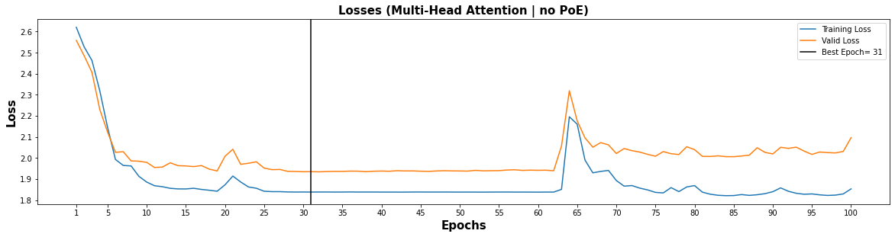
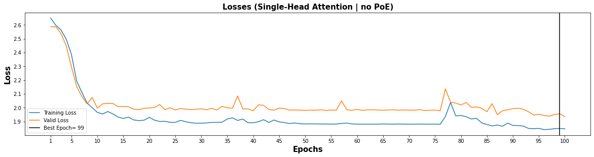
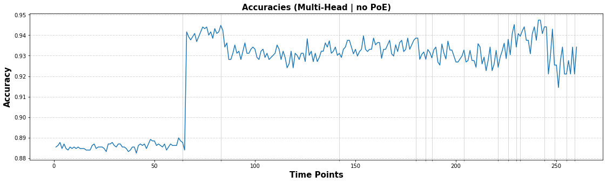
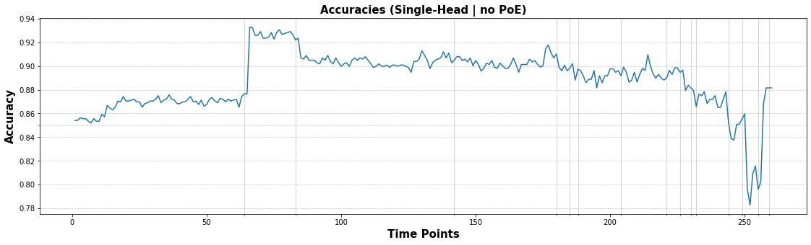
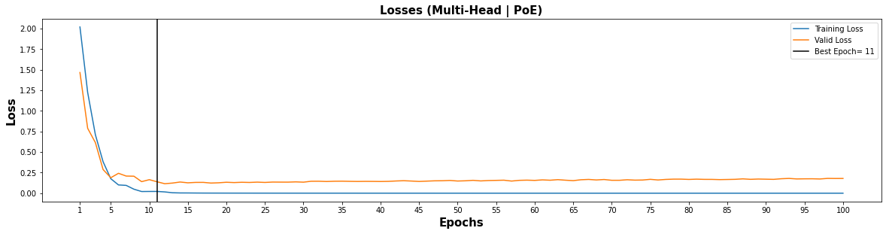
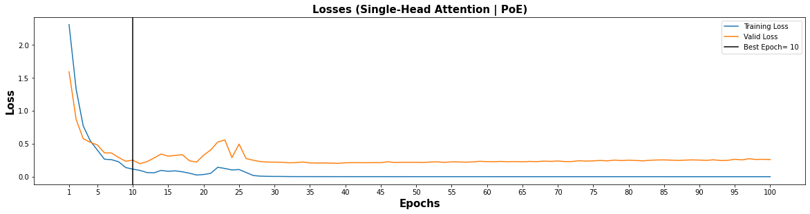
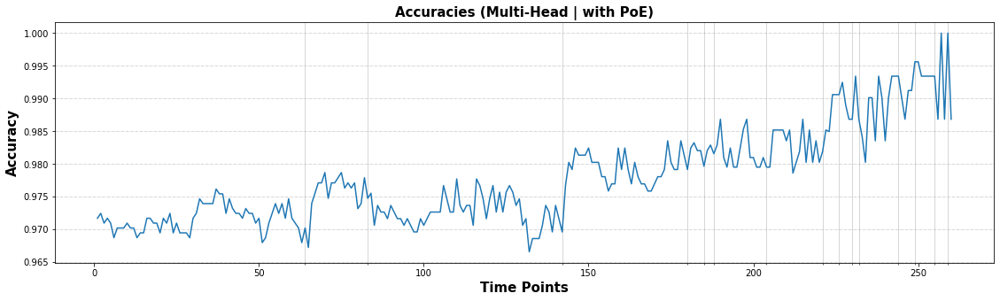
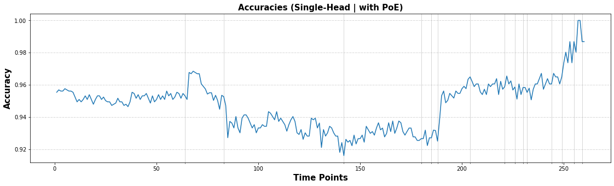
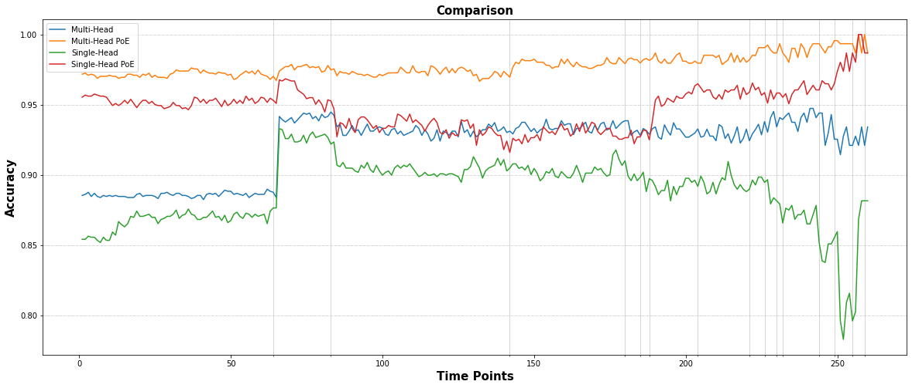

Transformers
Contents
Transformers#
Overview#
This notebook implements Transformer model for HCP (movie watching) data
Transformers were first present by Vaswani, et al. in their paper Attention Is All You Need.
Data Organization#
Same as in the gru + attention notebook
import torch
import pickle
import numpy as np
from ray import tune
import torch.nn as nn
from ray.tune import CLIReporter
from ray.tune.schedulers import ASHAScheduler
with open('Data/HCP_movie_watching.pkl','rb') as f:
TS = pickle.load(f)
print(TS.keys())
dict_keys(['testretest', 'twomen', 'bridgeville', 'pockets', 'overcome', 'inception', 'socialnet', 'oceans', 'flower', 'hotel', 'garden', 'dreary', 'homealone', 'brokovich', 'starwars'])
rel = {}
l = 0
seq_length = 0
time_changes = []
for movie_name, ts in TS.items():
rel[movie_name] = l
l += 1
seq_length = max(seq_length, ts.shape[-2])
time_changes.append(ts.shape[-2])
print(movie_name, ts.shape)
time_changes = np.array(time_changes)
time = [i for i in range(1,seq_length+1)]
testretest (4, 176, 84, 300)
twomen (176, 245, 300)
bridgeville (176, 222, 300)
pockets (176, 189, 300)
overcome (176, 65, 300)
inception (176, 227, 300)
socialnet (176, 260, 300)
oceans (176, 250, 300)
flower (176, 181, 300)
hotel (176, 186, 300)
garden (176, 205, 300)
dreary (176, 143, 300)
homealone (176, 233, 300)
brokovich (176, 231, 300)
starwars (176, 256, 300)
train_feature = []
test_feature = []
train_target = []
test_target = []
for movie_name, ts in TS.items():
pep = 0
if movie_name != "testretest":
for i in ts:
pep += 1
if (pep <= 100):
if i.shape[0]>seq_length:
k = i[:seq_length][:]
train_feature.append(k)
train_target.append(rel[movie_name])
k = i[i.shape[0]-seq_length:][:]
train_feature.append(k)
train_target.append(rel[movie_name])
elif i.shape[0]<seq_length:
k = [[-1]*300]*seq_length
k[seq_length-i.shape[0]:] = i
train_feature.append(k)
k = [[rel[movie_name]] for _ in range(i.shape[0])] + [[-100] for _ in range(seq_length-i.shape[0])]
train_target.append(k)
else:
train_feature.append(i)
train_target.append([[rel[movie_name]] for _ in range(seq_length)])
else:
if i.shape[0]>seq_length:
k = i[:seq_length][:]
test_feature.append(k)
test_target.append(rel[movie_name])
k = i[i.shape[0]-seq_length:][:]
test_feature.append(k)
test_target.append(rel[movie_name])
elif i.shape[0]<seq_length:
k = [[-1]*300]*seq_length
k[seq_length-i.shape[0]:] = i
test_feature.append(k)
k = [[rel[movie_name]] for _ in range(i.shape[0])] + [[-100] for _ in range(seq_length-i.shape[0])]
test_target.append(k)
else:
test_feature.append(i)
test_target.append([[rel[movie_name]] for _ in range(seq_length)])
print(pep)
else:
for jj in ts:
pep = 0
for i in jj:
pep += 1
if (pep <= 106):
if i.shape[0]>seq_length:
k = i[:seq_length][:]
train_feature.append(k)
train_target.append(rel[movie_name])
k = i[i.shape[0]-seq_length:][:]
train_feature.append(k)
train_target.append(rel[movie_name])
elif i.shape[0]<seq_length:
k = [[-1]*300]*seq_length
k[seq_length-i.shape[0]:] = i
train_feature.append(k)
k = [[rel[movie_name]] for _ in range(i.shape[0])] + [[-100] for _ in range(seq_length-i.shape[0])]
train_target.append(k)
else:
train_feature.append(i)
train_target.append([[rel[movie_name]] for _ in range(seq_length)])
else:
if i.shape[0]>seq_length:
k = i[:seq_length][:]
test_feature.append(k)
test_target.append(rel[movie_name])
k = i[i.shape[0]-seq_length:][:]
test_feature.append(k)
test_target.append(rel[movie_name])
elif i.shape[0]<seq_length:
k = [[-1]*300]*seq_length
k[seq_length-i.shape[0]:] = i
test_feature.append(k)
k = [[rel[movie_name]] for _ in range(i.shape[0])] + [[-100] for _ in range(seq_length-i.shape[0])]
test_target.append(k)
else:
test_feature.append(i)
test_target.append([[rel[movie_name]]*15 for _ in range(seq_length)])
print(pep)
from torch.utils.data import TensorDataset, DataLoader
train_data = TensorDataset(torch.from_numpy(np.array(train_feature)).float(),torch.from_numpy(np.array(train_target)).float())
test_data = TensorDataset(torch.from_numpy(np.array(test_feature)).float(),torch.from_numpy(np.array(test_target)).float())
from torch.utils.data.sampler import SubsetRandomSampler
batch_size = 32
valid_data = 0.246
t_train = len(train_data)
data_no = list(range(t_train))
np.random.shuffle(data_no)
split_no = int(valid_data*t_train)
train,valid = data_no[split_no:],data_no[:split_no]
train_sampler = SubsetRandomSampler(train)
valid_sampler = SubsetRandomSampler(valid)
train_loader = DataLoader(train_data,batch_size=batch_size,sampler=train_sampler)#drop_last=True)
valid_loader = DataLoader(train_data,sampler=valid_sampler,batch_size=batch_size)#drop_last=True)
test_loader = DataLoader(test_data, batch_size=batch_size,shuffle = True)
is_cuda = torch.cuda.is_available()
if is_cuda:
device = torch.device("cuda")
else:
device = torch.device("cpu")
device
device(type='cuda')
Modelling#
Positional Encodings#

class PositionalEncoding(nn.Module):
def __init__(self,d_model,seq_len):
"""
Args:
seq_len: length of input sequence
d_model: demension of encoding
"""
super(PositionalEncoding, self).__init__()
self.d_model = d_model
self.seq_len = seq_len
pe = torch.zeros(seq_len,self.d_model)
for pos in range(seq_len):
for i in range(0,self.d_model,2):
pe[pos, i] = np.sin(pos / (10000 ** ((2 * i)/self.d_model)))
pe[pos, i + 1] = np.cos(pos / (10000 ** ((2 * (i + 1))/self.d_model)))
pe = pe.unsqueeze(0)
self.register_buffer('pe', pe)
def forward(self, x):
x = x + torch.autograd.Variable(self.pe[:,:self.seq_len], requires_grad=False)
return x
Self Attention#

class Attention(nn.Module):
"""
q : current sequence
k : every sequence to check relationship with Qeury
v : every seq same with Key
"""
def __init__(self):
super(Attention, self).__init__()
self.softmax = nn.Softmax(dim=-1)
def forward(self, q, k, v): # [batch_size, head, length, d_tensor]
batch_size, head, length, d_tensor = k.size()
# 1. dot product Query with Key^T to compute similarity
k_t = k.transpose(2, 3)
score = (q @ k_t) / np.sqrt(d_tensor) # scaled dot product
# 2. Masking (opt)
# 3. Softmax
score = self.softmax(score)
# 4. multiply with Value
v = score @ v
return v, score
Multi Head Attention#

class MultiHeadAttention(nn.Module):
def __init__(self, d_model, n_head):
super(MultiHeadAttention, self).__init__()
self.n_head = n_head
self.attention = Attention()
self.w_q = nn.Linear(d_model, d_model)
self.w_k = nn.Linear(d_model, d_model)
self.w_v = nn.Linear(d_model, d_model)
self.w_concat = nn.Linear(d_model, d_model)
def forward(self, q, k, v):
# 1. dot product with weight matrices
q, k, v = self.w_q(q), self.w_k(k), self.w_v(v)
# 2. split tensor by number of heads
q, k, v = self.split(q), self.split(k), self.split(v)
# 3. do scale dot product to compute similarity
out, attention = self.attention(q, k, v)#, mask=mask)
# 4. concat and pass to linear layer
out = self.concat(out)
out = self.w_concat(out)
return out
def split(self, tensor):
"""
split tensor by number of head
:param tensor: [batch_size, length, d_model]
:return: [batch_size, head, length, d_tensor]
"""
batch_size, length, d_model = tensor.size()
d_tensor = d_model // self.n_head
tensor = tensor.view(batch_size, length, self.n_head, d_tensor).transpose(1, 2)
return tensor
def concat(self, tensor):
"""
:param tensor: [batch_size, head, length, d_tensor]
:return: [batch_size, length, d_model]
"""
batch_size, head, length, d_tensor = tensor.size()
d_model = head * d_tensor
tensor = tensor.transpose(1, 2).contiguous().view(batch_size, length, d_model)
return tensor
Feed Forward#
class FeedForward(nn.Module):
def __init__(self, d_model, feed_fwd, dropout):
super().__init__()
self.l1 = nn.Linear(d_model, feed_fwd)
self.l2 = nn.Linear(feed_fwd, d_model)
self.dropout = nn.Dropout(p=dropout)
self.relu = nn.ReLU()
def forward(self, x):
x = self.dropout(self.relu(self.l1(x)))
x = self.l2(x)
return x
Transformer Block#
class TransformerBlock(nn.Module):
def __init__(self, d_model,feed_fwd ,n_heads,drop_prob):
super(TransformerBlock, self).__init__()
"""
Args:
embed_dim: dimension of the embedding
n_heads: number of attention heads
"""
self.attention = MultiHeadAttention(d_model=d_model, n_head=n_head)
self.norm1 = nn.LayerNorm(d_model)
self.norm2 = nn.LayerNorm(d_model)
self.feed_fwd = FeedForward(d_model=d_model, feed_fwd=feed_fwd, dropout=drop_prob)
self.dropout1 = nn.Dropout(p=drop_prob)
self.dropout2 = nn.Dropout(p=drop_prob)
def forward(self,x):#key,query,value):
"""
Args:
key: key vector
query: query vector
value: value vector
"""
# 1. compute self attention
_x = x
#print(x.shape)
x = self.attention(q=x, k=x, v=x)
# 2. add and norm
x = self.norm1(x + _x)
x = self.dropout1(x)
# 3. feed forward network
_x = x
x = self.feed_fwd(x)
# 4. add and norm
x = self.norm2(x + _x)
x = self.dropout2(x)
return x
Complied Model (No PoE)#
class Transformer_Model(nn.Module):
def __init__(self, d_model, feed_fwd, out_dim, n_layers, n_head, drop_prob):
super(Transformer_Model, self).__init__()
self.layers = nn.ModuleList([TransformerBlock(d_model, feed_fwd, n_head, drop_prob) for i in range(n_layers)])
#nn.Transformer(d_model=300, nhead=4, num_encoder_layers=1, num_decoder_layers=1, dim_feedforward=1024, dropout=0.1)
self.linear_out = nn.Linear(d_model,out_dim)
self.fu = nn.Softmax(dim=-1)
def forward(self, x):
for layer in self.layers:
x = layer(x)
x = self.linear_out(x)
return self.fu(x)
Complied Model (with PoE)#
class Transformer_Model_PoE(nn.Module):
def __init__(self, d_model, feed_fwd, out_dim, n_layers, n_head, drop_prob):
super(Transformer_Model_PoE, self).__init__()
self.po_en = PositionalEncoding(d_model,seq_len=seq_length)
self.layers = nn.ModuleList([TransformerBlock(d_model, feed_fwd, n_head, drop_prob) for i in range(n_layers)])
self.linear_out = nn.Linear(d_model,out_dim)
def forward(self, x):
x = self.po_en(x)
for layer in self.layers:
x = layer(x)
x = self.linear_out(x)
return x
Training (No PoE)#
def train(epochs,train_loader,net,valid_loader,optimizer,criterion,att_name):
clip = 3 # gradient clipping
net.to(device)
net.train()
valid_loss_min = np.Inf
valid_losses = []
train_losses = []
for e in range(epochs):
train_loss = []
valid_loss = []
for inputs, labels in train_loader:
inputs, labels = inputs.to(device), labels.type(torch.LongTensor).to(device)
net.zero_grad()
output = net(inputs)
loss = criterion(output.permute(0,2,1), labels.squeeze())
loss.backward()
nn.utils.clip_grad_norm_(net.parameters(), clip)
optimizer.step()
train_loss.append(loss.item())
val_losses = []
net.eval()
for inputs, labels in valid_loader:
inputs, labels = inputs.to(device), labels.type(torch.LongTensor).to(device)
output= net(inputs)
val_loss = criterion(output.permute(0,2,1),labels.squeeze())
val_losses.append(val_loss.item())
if np.mean(val_losses) <= valid_loss_min:
print('Validation loss decreased ({:.6f} --> {:.6f}). Saving model ...'.format(valid_loss_min, np.mean(val_losses)))
best_epoch = e
torch.save(net.state_dict(), f'{att_name}.pt')
valid_loss_min = np.mean(val_losses)
net.train()
valid_losses.append(np.mean(val_losses))
train_losses.append(np.mean(train_loss))
print('Epoch: {}/{} \tTraining Loss: {:.6f} \tValidation Loss: {:.6f}'.format(e+1,epochs,np.mean(train_loss),np.mean(val_losses)))
return train_losses,valid_losses,best_epoch
def calc(pred,lab):
pred_2 = torch.where(lab!=-100,pred,100)
al = np.array((pred_2-lab).to('cpu'))
z = al.shape[0] - np.sum(al==200,axis=0)
y = al.shape[0] - np.count_nonzero(al, axis=0)
return y/z
def test(test_loader,net):
net.to(device)
net.eval()
T_pred = None
T_lab = None
for inputs, labels in test_loader:
inputs, labels = inputs.to(device), labels.type(torch.LongTensor).to(device)
output = net(inputs)
pred = torch.round(output.squeeze())
top_value, top_index = torch.max(pred,2,keepdim=True)
if T_pred == None:
T_pred = top_index.squeeze()
T_lab = labels.squeeze()
else:
T_pred = torch.cat((T_pred,top_index.squeeze()),0)
T_lab = torch.cat((T_lab,labels.squeeze()),0)
return T_pred,T_lab
epochs = 100
d_model = 300
feed_fwd = 128
output_dim = 15
n_head = 4
n_layers = 1
drop_prob = 0.2
lr = 0.002
Multi-Head Attention#
model1 = Transformer_Model(d_model, feed_fwd, output_dim, n_layers,n_head, drop_prob)
optimizer1 = torch.optim.Adam(model1.parameters(), lr=lr)
criterion1 = nn.CrossEntropyLoss(ignore_index=-100)
model1
Transformer_Model(
(layers): ModuleList(
(0): TransformerBlock(
(attention): MultiHeadAttention(
(attention): Attention(
(softmax): Softmax(dim=-1)
)
(w_q): Linear(in_features=300, out_features=300, bias=True)
(w_k): Linear(in_features=300, out_features=300, bias=True)
(w_v): Linear(in_features=300, out_features=300, bias=True)
(w_concat): Linear(in_features=300, out_features=300, bias=True)
)
(norm1): LayerNorm((300,), eps=1e-05, elementwise_affine=True)
(norm2): LayerNorm((300,), eps=1e-05, elementwise_affine=True)
(feed_fwd): FeedForward(
(l1): Linear(in_features=300, out_features=128, bias=True)
(l2): Linear(in_features=128, out_features=300, bias=True)
(dropout): Dropout(p=0.2, inplace=False)
(relu): ReLU()
)
(dropout1): Dropout(p=0.2, inplace=False)
(dropout2): Dropout(p=0.2, inplace=False)
)
)
(linear_out): Linear(in_features=300, out_features=15, bias=True)
(fu): Softmax(dim=-1)
)
train_losses,valid_losses,best_epoch = train(epochs,train_loader,model1,valid_loader,optimizer1,criterion1,att_name="Multi_Att")
Validation loss decreased (inf --> 2.558128). Saving model ...
Epoch: 1/100 Training Loss: 2.620239 Validation Loss: 2.558128
Validation loss decreased (2.558128 --> 2.485654). Saving model ...
Epoch: 2/100 Training Loss: 2.527613 Validation Loss: 2.485654
Validation loss decreased (2.485654 --> 2.406515). Saving model ...
Epoch: 3/100 Training Loss: 2.462948 Validation Loss: 2.406515
Validation loss decreased (2.406515 --> 2.230242). Saving model ...
Epoch: 4/100 Training Loss: 2.319216 Validation Loss: 2.230242
Validation loss decreased (2.230242 --> 2.122868). Saving model ...
Epoch: 5/100 Training Loss: 2.144954 Validation Loss: 2.122868
Validation loss decreased (2.122868 --> 2.027158). Saving model ...
Epoch: 6/100 Training Loss: 1.993470 Validation Loss: 2.027158
Epoch: 7/100 Training Loss: 1.964969 Validation Loss: 2.030166
Validation loss decreased (2.027158 --> 1.986581). Saving model ...
Epoch: 8/100 Training Loss: 1.962736 Validation Loss: 1.986581
Validation loss decreased (1.986581 --> 1.985217). Saving model ...
Epoch: 9/100 Training Loss: 1.913326 Validation Loss: 1.985217
Validation loss decreased (1.985217 --> 1.979531). Saving model ...
Epoch: 10/100 Training Loss: 1.886061 Validation Loss: 1.979531
Validation loss decreased (1.979531 --> 1.955277). Saving model ...
Epoch: 11/100 Training Loss: 1.868671 Validation Loss: 1.955277
Epoch: 12/100 Training Loss: 1.864253 Validation Loss: 1.957352
Epoch: 13/100 Training Loss: 1.856485 Validation Loss: 1.977531
Epoch: 14/100 Training Loss: 1.853709 Validation Loss: 1.963931
Epoch: 15/100 Training Loss: 1.853599 Validation Loss: 1.962696
Epoch: 16/100 Training Loss: 1.856690 Validation Loss: 1.959611
Epoch: 17/100 Training Loss: 1.851230 Validation Loss: 1.964421
Validation loss decreased (1.955277 --> 1.947290). Saving model ...
Epoch: 18/100 Training Loss: 1.847334 Validation Loss: 1.947290
Validation loss decreased (1.947290 --> 1.939158). Saving model ...
Epoch: 19/100 Training Loss: 1.842724 Validation Loss: 1.939158
Epoch: 20/100 Training Loss: 1.873061 Validation Loss: 2.008496
Epoch: 21/100 Training Loss: 1.914677 Validation Loss: 2.041822
Epoch: 22/100 Training Loss: 1.886712 Validation Loss: 1.970374
Epoch: 23/100 Training Loss: 1.862922 Validation Loss: 1.975465
Epoch: 24/100 Training Loss: 1.856886 Validation Loss: 1.982330
Epoch: 25/100 Training Loss: 1.842640 Validation Loss: 1.952542
Epoch: 26/100 Training Loss: 1.840749 Validation Loss: 1.945079
Epoch: 27/100 Training Loss: 1.840757 Validation Loss: 1.945969
Validation loss decreased (1.939158 --> 1.937100). Saving model ...
Epoch: 28/100 Training Loss: 1.839295 Validation Loss: 1.937100
Validation loss decreased (1.937100 --> 1.936375). Saving model ...
Epoch: 29/100 Training Loss: 1.838852 Validation Loss: 1.936375
Validation loss decreased (1.936375 --> 1.935248). Saving model ...
Epoch: 30/100 Training Loss: 1.839012 Validation Loss: 1.935248
Epoch: 31/100 Training Loss: 1.838796 Validation Loss: 1.935495
Validation loss decreased (1.935248 --> 1.934791). Saving model ...
Epoch: 32/100 Training Loss: 1.839049 Validation Loss: 1.934791
Epoch: 33/100 Training Loss: 1.839023 Validation Loss: 1.936005
Epoch: 34/100 Training Loss: 1.838729 Validation Loss: 1.936886
Epoch: 35/100 Training Loss: 1.838878 Validation Loss: 1.936747
Epoch: 36/100 Training Loss: 1.839224 Validation Loss: 1.938171
Epoch: 37/100 Training Loss: 1.838841 Validation Loss: 1.937875
Epoch: 38/100 Training Loss: 1.838992 Validation Loss: 1.935434
Epoch: 39/100 Training Loss: 1.838882 Validation Loss: 1.937590
Epoch: 40/100 Training Loss: 1.838739 Validation Loss: 1.938449
Epoch: 41/100 Training Loss: 1.838622 Validation Loss: 1.937474
Epoch: 42/100 Training Loss: 1.838561 Validation Loss: 1.940114
Epoch: 43/100 Training Loss: 1.838552 Validation Loss: 1.938993
Epoch: 44/100 Training Loss: 1.838974 Validation Loss: 1.939075
Epoch: 45/100 Training Loss: 1.838981 Validation Loss: 1.937758
Epoch: 46/100 Training Loss: 1.838808 Validation Loss: 1.936801
Epoch: 47/100 Training Loss: 1.838727 Validation Loss: 1.938790
Epoch: 48/100 Training Loss: 1.839003 Validation Loss: 1.940091
Epoch: 49/100 Training Loss: 1.838776 Validation Loss: 1.939167
Epoch: 50/100 Training Loss: 1.838584 Validation Loss: 1.938853
Epoch: 51/100 Training Loss: 1.838709 Validation Loss: 1.938198
Epoch: 52/100 Training Loss: 1.838534 Validation Loss: 1.941712
Epoch: 53/100 Training Loss: 1.838447 Validation Loss: 1.939519
Epoch: 54/100 Training Loss: 1.838746 Validation Loss: 1.940064
Epoch: 55/100 Training Loss: 1.838836 Validation Loss: 1.940434
Epoch: 56/100 Training Loss: 1.838973 Validation Loss: 1.943233
Epoch: 57/100 Training Loss: 1.838599 Validation Loss: 1.944453
Epoch: 58/100 Training Loss: 1.838690 Validation Loss: 1.941589
Epoch: 59/100 Training Loss: 1.838533 Validation Loss: 1.942689
Epoch: 60/100 Training Loss: 1.838361 Validation Loss: 1.941978
Epoch: 61/100 Training Loss: 1.838692 Validation Loss: 1.942512
Epoch: 62/100 Training Loss: 1.838656 Validation Loss: 1.939909
Epoch: 63/100 Training Loss: 1.851523 Validation Loss: 2.057718
Epoch: 64/100 Training Loss: 2.195764 Validation Loss: 2.319315
Epoch: 65/100 Training Loss: 2.160971 Validation Loss: 2.176816
Epoch: 66/100 Training Loss: 1.990632 Validation Loss: 2.095795
Epoch: 67/100 Training Loss: 1.930069 Validation Loss: 2.051661
Epoch: 68/100 Training Loss: 1.936646 Validation Loss: 2.073240
Epoch: 69/100 Training Loss: 1.941428 Validation Loss: 2.062661
Epoch: 70/100 Training Loss: 1.893663 Validation Loss: 2.021741
Epoch: 71/100 Training Loss: 1.866880 Validation Loss: 2.045145
Epoch: 72/100 Training Loss: 1.869525 Validation Loss: 2.035216
Epoch: 73/100 Training Loss: 1.857449 Validation Loss: 2.028330
Epoch: 74/100 Training Loss: 1.849006 Validation Loss: 2.017744
Epoch: 75/100 Training Loss: 1.837282 Validation Loss: 2.008796
Epoch: 76/100 Training Loss: 1.834715 Validation Loss: 2.030621
Epoch: 77/100 Training Loss: 1.859802 Validation Loss: 2.020690
Epoch: 78/100 Training Loss: 1.840886 Validation Loss: 2.016833
Epoch: 79/100 Training Loss: 1.863101 Validation Loss: 2.053932
Epoch: 80/100 Training Loss: 1.869382 Validation Loss: 2.040153
Epoch: 81/100 Training Loss: 1.838384 Validation Loss: 2.008151
Epoch: 82/100 Training Loss: 1.828583 Validation Loss: 2.007534
Epoch: 83/100 Training Loss: 1.823523 Validation Loss: 2.010594
Epoch: 84/100 Training Loss: 1.821672 Validation Loss: 2.006714
Epoch: 85/100 Training Loss: 1.822154 Validation Loss: 2.006501
Epoch: 86/100 Training Loss: 1.826925 Validation Loss: 2.009744
Epoch: 87/100 Training Loss: 1.823027 Validation Loss: 2.014060
Epoch: 88/100 Training Loss: 1.826117 Validation Loss: 2.049022
Epoch: 89/100 Training Loss: 1.831173 Validation Loss: 2.027048
Epoch: 90/100 Training Loss: 1.840546 Validation Loss: 2.019544
Epoch: 91/100 Training Loss: 1.858587 Validation Loss: 2.051018
Epoch: 92/100 Training Loss: 1.842411 Validation Loss: 2.046072
Epoch: 93/100 Training Loss: 1.833023 Validation Loss: 2.051667
Epoch: 94/100 Training Loss: 1.828372 Validation Loss: 2.032995
Epoch: 95/100 Training Loss: 1.829938 Validation Loss: 2.017307
Epoch: 96/100 Training Loss: 1.825489 Validation Loss: 2.028744
Epoch: 97/100 Training Loss: 1.822833 Validation Loss: 2.025908
Epoch: 98/100 Training Loss: 1.824288 Validation Loss: 2.024433
Epoch: 99/100 Training Loss: 1.829924 Validation Loss: 2.031542
Epoch: 100/100 Training Loss: 1.853724 Validation Loss: 2.096600
import matplotlib.pyplot as plt
x = [i for i in range(1,epochs+1)]
xi = [i for i in range(0,epochs+5,5)]
xi[0] = 1
f, axis = plt.subplots(1,1)
f.set_figwidth(20)
f.set_figheight(5)
plt.subplots_adjust(top=0.8, wspace=0.2,hspace=0.3)
axis.plot(x,train_losses)
axis.plot(x,valid_losses)
axis.axvline(best_epoch, color='black')
axis.set_xticks(xi)
axis.set_xlabel("Epochs",fontweight="bold",color = 'Black', fontsize='15', horizontalalignment='center')
axis.set_ylabel("Loss",fontweight="bold",color = 'Black', fontsize='15', horizontalalignment='center')
axis.set_title("Losses (Multi-Head Attention | no PoE)",fontweight='bold',color = 'Black', fontsize='15', horizontalalignment='center')
axis.legend(["Training Loss","Valid Loss",f"Best Epoch= {best_epoch}"]);

model1 = Transformer_Model(d_model, feed_fwd, output_dim, n_layers, n_head, drop_prob)
model1.load_state_dict(torch.load('Multi_Att.pt'))
<All keys matched successfully>
pred,lab = test(test_loader,model1)
time_point_acc = calc(pred,lab)
Single-Head Attention#
epochs = 100
d_model = 300
feed_fwd = 128
output_dim = 15
n_head = 1
n_layers = 1
drop_prob = 0.2
lr = 0.001
model2 = Transformer_Model(d_model, feed_fwd, output_dim, n_layers,n_head, drop_prob)
optimizer2 = torch.optim.Adam(model2.parameters(), lr=lr)
criterion2 = nn.CrossEntropyLoss(ignore_index=-100)
model2
Transformer_Model(
(layers): ModuleList(
(0): TransformerBlock(
(attention): MultiHeadAttention(
(attention): Attention(
(softmax): Softmax(dim=-1)
)
(w_q): Linear(in_features=300, out_features=300, bias=True)
(w_k): Linear(in_features=300, out_features=300, bias=True)
(w_v): Linear(in_features=300, out_features=300, bias=True)
(w_concat): Linear(in_features=300, out_features=300, bias=True)
)
(norm1): LayerNorm((300,), eps=1e-05, elementwise_affine=True)
(norm2): LayerNorm((300,), eps=1e-05, elementwise_affine=True)
(feed_fwd): FeedForward(
(l1): Linear(in_features=300, out_features=128, bias=True)
(l2): Linear(in_features=128, out_features=300, bias=True)
(dropout): Dropout(p=0.2, inplace=False)
(relu): ReLU()
)
(dropout1): Dropout(p=0.2, inplace=False)
(dropout2): Dropout(p=0.2, inplace=False)
)
)
(linear_out): Linear(in_features=300, out_features=15, bias=True)
(fu): Softmax(dim=-1)
)
train_losses2,valid_losses2,best_epoch2 = train(epochs,train_loader,model2,valid_loader,optimizer2,criterion2,att_name="Single_Att")
Validation loss decreased (inf --> 2.585229). Saving model ...
Epoch: 1/100 Training Loss: 2.648450 Validation Loss: 2.585229
Epoch: 2/100 Training Loss: 2.596459 Validation Loss: 2.585414
Validation loss decreased (2.585229 --> 2.535964). Saving model ...
Epoch: 3/100 Training Loss: 2.562524 Validation Loss: 2.535964
Validation loss decreased (2.535964 --> 2.447980). Saving model ...
Epoch: 4/100 Training Loss: 2.496027 Validation Loss: 2.447980
Validation loss decreased (2.447980 --> 2.296068). Saving model ...
Epoch: 5/100 Training Loss: 2.386010 Validation Loss: 2.296068
Validation loss decreased (2.296068 --> 2.154861). Saving model ...
Epoch: 6/100 Training Loss: 2.194808 Validation Loss: 2.154861
Validation loss decreased (2.154861 --> 2.082356). Saving model ...
Epoch: 7/100 Training Loss: 2.112253 Validation Loss: 2.082356
Validation loss decreased (2.082356 --> 2.027794). Saving model ...
Epoch: 8/100 Training Loss: 2.035137 Validation Loss: 2.027794
Epoch: 9/100 Training Loss: 2.000374 Validation Loss: 2.074464
Validation loss decreased (2.027794 --> 1.996643). Saving model ...
Epoch: 10/100 Training Loss: 1.966721 Validation Loss: 1.996643
Epoch: 11/100 Training Loss: 1.955219 Validation Loss: 2.028345
Epoch: 12/100 Training Loss: 1.972660 Validation Loss: 2.031719
Epoch: 13/100 Training Loss: 1.955390 Validation Loss: 2.030760
Epoch: 14/100 Training Loss: 1.932617 Validation Loss: 2.007746
Epoch: 15/100 Training Loss: 1.922651 Validation Loss: 2.009850
Epoch: 16/100 Training Loss: 1.932333 Validation Loss: 2.007547
Validation loss decreased (1.996643 --> 1.989306). Saving model ...
Epoch: 17/100 Training Loss: 1.912011 Validation Loss: 1.989306
Validation loss decreased (1.989306 --> 1.985684). Saving model ...
Epoch: 18/100 Training Loss: 1.907017 Validation Loss: 1.985684
Epoch: 19/100 Training Loss: 1.910532 Validation Loss: 1.996427
Epoch: 20/100 Training Loss: 1.930609 Validation Loss: 1.998579
Epoch: 21/100 Training Loss: 1.910024 Validation Loss: 2.001227
Epoch: 22/100 Training Loss: 1.901018 Validation Loss: 2.023634
Epoch: 23/100 Training Loss: 1.901944 Validation Loss: 1.986612
Epoch: 24/100 Training Loss: 1.894917 Validation Loss: 2.000077
Validation loss decreased (1.985684 --> 1.983950). Saving model ...
Epoch: 25/100 Training Loss: 1.894051 Validation Loss: 1.983950
Epoch: 26/100 Training Loss: 1.909342 Validation Loss: 1.994647
Epoch: 27/100 Training Loss: 1.899398 Validation Loss: 1.990354
Epoch: 28/100 Training Loss: 1.891571 Validation Loss: 1.986428
Epoch: 29/100 Training Loss: 1.888305 Validation Loss: 1.989345
Epoch: 30/100 Training Loss: 1.888895 Validation Loss: 1.992817
Epoch: 31/100 Training Loss: 1.890119 Validation Loss: 1.984894
Epoch: 32/100 Training Loss: 1.894099 Validation Loss: 1.996182
Validation loss decreased (1.983950 --> 1.983551). Saving model ...
Epoch: 33/100 Training Loss: 1.894428 Validation Loss: 1.983551
Epoch: 34/100 Training Loss: 1.895650 Validation Loss: 2.010555
Epoch: 35/100 Training Loss: 1.918738 Validation Loss: 1.999970
Epoch: 36/100 Training Loss: 1.926951 Validation Loss: 1.996160
Epoch: 37/100 Training Loss: 1.908409 Validation Loss: 2.085014
Epoch: 38/100 Training Loss: 1.918516 Validation Loss: 1.991639
Epoch: 39/100 Training Loss: 1.891632 Validation Loss: 1.991933
Validation loss decreased (1.983551 --> 1.978495). Saving model ...
Epoch: 40/100 Training Loss: 1.891667 Validation Loss: 1.978495
Epoch: 41/100 Training Loss: 1.898402 Validation Loss: 2.021123
Epoch: 42/100 Training Loss: 1.913814 Validation Loss: 2.017723
Epoch: 43/100 Training Loss: 1.893705 Validation Loss: 1.987882
Epoch: 44/100 Training Loss: 1.911863 Validation Loss: 1.982104
Epoch: 45/100 Training Loss: 1.897792 Validation Loss: 1.998158
Epoch: 46/100 Training Loss: 1.892973 Validation Loss: 1.993907
Epoch: 47/100 Training Loss: 1.885770 Validation Loss: 1.983174
Epoch: 48/100 Training Loss: 1.890178 Validation Loss: 1.984496
Epoch: 49/100 Training Loss: 1.884436 Validation Loss: 1.982422
Epoch: 50/100 Training Loss: 1.882882 Validation Loss: 1.981169
Epoch: 51/100 Training Loss: 1.883625 Validation Loss: 1.982607
Epoch: 52/100 Training Loss: 1.882989 Validation Loss: 1.981915
Epoch: 53/100 Training Loss: 1.882428 Validation Loss: 1.985453
Epoch: 54/100 Training Loss: 1.882617 Validation Loss: 1.979736
Epoch: 55/100 Training Loss: 1.881873 Validation Loss: 1.983670
Epoch: 56/100 Training Loss: 1.882274 Validation Loss: 1.982642
Epoch: 57/100 Training Loss: 1.886503 Validation Loss: 2.050159
Epoch: 58/100 Training Loss: 1.889359 Validation Loss: 1.986322
Epoch: 59/100 Training Loss: 1.882992 Validation Loss: 1.981808
Epoch: 60/100 Training Loss: 1.882301 Validation Loss: 1.988789
Epoch: 61/100 Training Loss: 1.881412 Validation Loss: 1.981845
Epoch: 62/100 Training Loss: 1.881732 Validation Loss: 1.985015
Epoch: 63/100 Training Loss: 1.881317 Validation Loss: 1.985504
Epoch: 64/100 Training Loss: 1.881832 Validation Loss: 1.983355
Epoch: 65/100 Training Loss: 1.882860 Validation Loss: 1.982353
Epoch: 66/100 Training Loss: 1.881968 Validation Loss: 1.983745
Epoch: 67/100 Training Loss: 1.881735 Validation Loss: 1.985528
Epoch: 68/100 Training Loss: 1.882446 Validation Loss: 1.982466
Epoch: 69/100 Training Loss: 1.882078 Validation Loss: 1.984662
Epoch: 70/100 Training Loss: 1.881318 Validation Loss: 1.982478
Epoch: 71/100 Training Loss: 1.881507 Validation Loss: 1.982294
Epoch: 72/100 Training Loss: 1.882201 Validation Loss: 1.986694
Epoch: 73/100 Training Loss: 1.881922 Validation Loss: 1.980080
Epoch: 74/100 Training Loss: 1.881613 Validation Loss: 1.981807
Epoch: 75/100 Training Loss: 1.881780 Validation Loss: 1.983411
Validation loss decreased (1.978495 --> 1.977985). Saving model ...
Epoch: 76/100 Training Loss: 1.880786 Validation Loss: 1.977985
Epoch: 77/100 Training Loss: 1.935802 Validation Loss: 2.137185
Epoch: 78/100 Training Loss: 2.038296 Validation Loss: 2.039253
Epoch: 79/100 Training Loss: 1.940928 Validation Loss: 2.034492
Epoch: 80/100 Training Loss: 1.945082 Validation Loss: 2.019560
Epoch: 81/100 Training Loss: 1.934571 Validation Loss: 2.038037
Epoch: 82/100 Training Loss: 1.919078 Validation Loss: 2.003232
Epoch: 83/100 Training Loss: 1.923617 Validation Loss: 2.005843
Epoch: 84/100 Training Loss: 1.890258 Validation Loss: 1.996133
Validation loss decreased (1.977985 --> 1.971699). Saving model ...
Epoch: 85/100 Training Loss: 1.878845 Validation Loss: 1.971699
Epoch: 86/100 Training Loss: 1.868587 Validation Loss: 2.029623
Validation loss decreased (1.971699 --> 1.949780). Saving model ...
Epoch: 87/100 Training Loss: 1.875334 Validation Loss: 1.949780
Epoch: 88/100 Training Loss: 1.866428 Validation Loss: 1.978346
Epoch: 89/100 Training Loss: 1.889107 Validation Loss: 1.985537
Epoch: 90/100 Training Loss: 1.872126 Validation Loss: 1.993481
Epoch: 91/100 Training Loss: 1.871369 Validation Loss: 1.997066
Epoch: 92/100 Training Loss: 1.867494 Validation Loss: 1.988546
Epoch: 93/100 Training Loss: 1.850625 Validation Loss: 1.971448
Validation loss decreased (1.949780 --> 1.946928). Saving model ...
Epoch: 94/100 Training Loss: 1.848474 Validation Loss: 1.946928
Epoch: 95/100 Training Loss: 1.851115 Validation Loss: 1.953365
Validation loss decreased (1.946928 --> 1.944478). Saving model ...
Epoch: 96/100 Training Loss: 1.841970 Validation Loss: 1.944478
Validation loss decreased (1.944478 --> 1.939058). Saving model ...
Epoch: 97/100 Training Loss: 1.844047 Validation Loss: 1.939058
Epoch: 98/100 Training Loss: 1.848608 Validation Loss: 1.951742
Epoch: 99/100 Training Loss: 1.850600 Validation Loss: 1.956560
Validation loss decreased (1.939058 --> 1.936667). Saving model ...
Epoch: 100/100 Training Loss: 1.847616 Validation Loss: 1.936667
x = [i for i in range(1,epochs+1)]
xi = [i for i in range(0,epochs+5,5)]
xi[0] = 1
f, axis = plt.subplots(1,1)
f.set_figwidth(20)
f.set_figheight(5)
plt.subplots_adjust(top=0.8, wspace=0.2,hspace=0.3)
axis.plot(x,train_losses2)
axis.plot(x,valid_losses2)
axis.axvline(best_epoch2, color='black')
axis.set_xticks(xi)
axis.set_xlabel("Epochs",fontweight="bold",color = 'Black', fontsize='15', horizontalalignment='center')
axis.set_ylabel("Loss",fontweight="bold",color = 'Black', fontsize='15', horizontalalignment='center')
axis.set_title("Losses (Single-Head Attention | no PoE)",fontweight='bold',color = 'Black', fontsize='15', horizontalalignment='center')
axis.legend(["Training Loss","Valid Loss",f"Best Epoch= {best_epoch2}"]);

model2 = Transformer_Model(d_model, feed_fwd, output_dim, n_layers, n_head, drop_prob)
model2.load_state_dict(torch.load('Single_Att.pt'))
<All keys matched successfully>
pred1,lab = test(test_loader,model2)
time_point_acc1 = calc(pred1,lab)
Testing (No PoE)#
Multi-Head Attention#
f, ax = plt.subplots(1,1)
f.set_figwidth(19)
f.set_figheight(5)
ax.plot(time,time_point_acc)
ax.set_xticks(time_changes-1, minor=True)
ax.set_yticks([0.85], minor=True)
ax.yaxis.grid(True,linestyle='-.', linewidth=0.5, which='both')
ax.xaxis.grid(True,linestyle='-', linewidth=0.5, which='minor')
ax.set_xlabel("Time Points",fontweight="bold",color = 'Black', fontsize='15', horizontalalignment='center')
ax.set_ylabel("Accuracy",fontweight="bold",color = 'Black', fontsize='15', horizontalalignment='center')
ax.set_title("Accuracies (Multi-Head | no PoE)",fontweight='bold',color = 'Black', fontsize='15', horizontalalignment='center');

Single-Head Attention#
time = [i for i in range(1,seq_length+1)]
f, ax = plt.subplots(1,1)
f.set_figwidth(19)
f.set_figheight(5)
ax.plot(time,time_point_acc1)
ax.set_xticks(time_changes-1, minor=True)
ax.set_yticks([0.85], minor=True)
ax.yaxis.grid(True,linestyle='-.', linewidth=0.5, which='both')
ax.xaxis.grid(True,linestyle='-', linewidth=0.5, which='minor')
ax.set_xlabel("Time Points",fontweight="bold",color = 'Black', fontsize='15', horizontalalignment='center')
ax.set_ylabel("Accuracy",fontweight="bold",color = 'Black', fontsize='15', horizontalalignment='center')
ax.set_title("Accuracies (Single-Head | no PoE)",fontweight='bold',color = 'Black', fontsize='15', horizontalalignment='center');

Training (with PoE)#
Multi-Head Attention#
epochs = 100
d_model = 300
feed_fwd = 128
output_dim = 15
n_head = 4
n_layers = 1
drop_prob = 0.2
lr = 0.001
model3 = Transformer_Model_PoE(d_model, feed_fwd, output_dim, n_layers,n_head, drop_prob)
optimizer3 = torch.optim.Adam(model3.parameters(), lr=lr)
criterion3 = nn.CrossEntropyLoss(ignore_index=-100)
model3
Transformer_Model_PoE(
(po_en): PositionalEncoding()
(layers): ModuleList(
(0): TransformerBlock(
(attention): MultiHeadAttention(
(attention): Attention(
(softmax): Softmax(dim=-1)
)
(w_q): Linear(in_features=300, out_features=300, bias=True)
(w_k): Linear(in_features=300, out_features=300, bias=True)
(w_v): Linear(in_features=300, out_features=300, bias=True)
(w_concat): Linear(in_features=300, out_features=300, bias=True)
)
(norm1): LayerNorm((300,), eps=1e-05, elementwise_affine=True)
(norm2): LayerNorm((300,), eps=1e-05, elementwise_affine=True)
(feed_fwd): FeedForward(
(l1): Linear(in_features=300, out_features=128, bias=True)
(l2): Linear(in_features=128, out_features=300, bias=True)
(dropout): Dropout(p=0.2, inplace=False)
(relu): ReLU()
)
(dropout1): Dropout(p=0.2, inplace=False)
(dropout2): Dropout(p=0.2, inplace=False)
)
)
(linear_out): Linear(in_features=300, out_features=15, bias=True)
)
train_losses3,valid_losses3,best_epoch3 = train(epochs,train_loader,model3,valid_loader,optimizer3,criterion3,att_name="PoE_Multi_Att")
Validation loss decreased (inf --> 1.466577). Saving model ...
Epoch: 1/100 Training Loss: 2.020179 Validation Loss: 1.466577
Validation loss decreased (1.466577 --> 0.788715). Saving model ...
Epoch: 2/100 Training Loss: 1.225005 Validation Loss: 0.788715
Validation loss decreased (0.788715 --> 0.615095). Saving model ...
Epoch: 3/100 Training Loss: 0.711279 Validation Loss: 0.615095
Validation loss decreased (0.615095 --> 0.287511). Saving model ...
Epoch: 4/100 Training Loss: 0.382490 Validation Loss: 0.287511
Validation loss decreased (0.287511 --> 0.188107). Saving model ...
Epoch: 5/100 Training Loss: 0.176139 Validation Loss: 0.188107
Epoch: 6/100 Training Loss: 0.100320 Validation Loss: 0.241735
Epoch: 7/100 Training Loss: 0.094769 Validation Loss: 0.208236
Epoch: 8/100 Training Loss: 0.048667 Validation Loss: 0.206405
Validation loss decreased (0.188107 --> 0.140268). Saving model ...
Epoch: 9/100 Training Loss: 0.020167 Validation Loss: 0.140268
Epoch: 10/100 Training Loss: 0.021013 Validation Loss: 0.164269
Validation loss decreased (0.140268 --> 0.138943). Saving model ...
Epoch: 11/100 Training Loss: 0.021234 Validation Loss: 0.138943
Validation loss decreased (0.138943 --> 0.115112). Saving model ...
Epoch: 12/100 Training Loss: 0.015541 Validation Loss: 0.115112
Epoch: 13/100 Training Loss: 0.005370 Validation Loss: 0.123058
Epoch: 14/100 Training Loss: 0.002933 Validation Loss: 0.135786
Epoch: 15/100 Training Loss: 0.002696 Validation Loss: 0.126146
Epoch: 16/100 Training Loss: 0.001958 Validation Loss: 0.131021
Epoch: 17/100 Training Loss: 0.001453 Validation Loss: 0.131382
Epoch: 18/100 Training Loss: 0.001266 Validation Loss: 0.123142
Epoch: 19/100 Training Loss: 0.001156 Validation Loss: 0.126453
Epoch: 20/100 Training Loss: 0.001038 Validation Loss: 0.132934
Epoch: 21/100 Training Loss: 0.000939 Validation Loss: 0.129085
Epoch: 22/100 Training Loss: 0.000847 Validation Loss: 0.132708
Epoch: 23/100 Training Loss: 0.000787 Validation Loss: 0.130552
Epoch: 24/100 Training Loss: 0.000725 Validation Loss: 0.134397
Epoch: 25/100 Training Loss: 0.000674 Validation Loss: 0.130758
Epoch: 26/100 Training Loss: 0.000629 Validation Loss: 0.135195
Epoch: 27/100 Training Loss: 0.000585 Validation Loss: 0.134589
Epoch: 28/100 Training Loss: 0.000558 Validation Loss: 0.134356
Epoch: 29/100 Training Loss: 0.000508 Validation Loss: 0.137507
Epoch: 30/100 Training Loss: 0.000481 Validation Loss: 0.133961
Epoch: 31/100 Training Loss: 0.000453 Validation Loss: 0.145060
Epoch: 32/100 Training Loss: 0.000419 Validation Loss: 0.145344
Epoch: 33/100 Training Loss: 0.000404 Validation Loss: 0.142017
Epoch: 34/100 Training Loss: 0.000386 Validation Loss: 0.145265
Epoch: 35/100 Training Loss: 0.000360 Validation Loss: 0.146053
Epoch: 36/100 Training Loss: 0.000361 Validation Loss: 0.144080
Epoch: 37/100 Training Loss: 0.000322 Validation Loss: 0.142568
Epoch: 38/100 Training Loss: 0.000305 Validation Loss: 0.143743
Epoch: 39/100 Training Loss: 0.000296 Validation Loss: 0.143292
Epoch: 40/100 Training Loss: 0.000276 Validation Loss: 0.142114
Epoch: 41/100 Training Loss: 0.000265 Validation Loss: 0.143759
Epoch: 42/100 Training Loss: 0.000251 Validation Loss: 0.148340
Epoch: 43/100 Training Loss: 0.000248 Validation Loss: 0.151686
Epoch: 44/100 Training Loss: 0.000231 Validation Loss: 0.147625
Epoch: 45/100 Training Loss: 0.000220 Validation Loss: 0.142732
Epoch: 46/100 Training Loss: 0.000211 Validation Loss: 0.146591
Epoch: 47/100 Training Loss: 0.000200 Validation Loss: 0.150286
Epoch: 48/100 Training Loss: 0.000194 Validation Loss: 0.151220
Epoch: 49/100 Training Loss: 0.000191 Validation Loss: 0.154859
Epoch: 50/100 Training Loss: 0.000183 Validation Loss: 0.147867
Epoch: 51/100 Training Loss: 0.000177 Validation Loss: 0.150665
Epoch: 52/100 Training Loss: 0.000165 Validation Loss: 0.156274
Epoch: 53/100 Training Loss: 0.000158 Validation Loss: 0.149219
Epoch: 54/100 Training Loss: 0.000154 Validation Loss: 0.153947
Epoch: 55/100 Training Loss: 0.000151 Validation Loss: 0.155738
Epoch: 56/100 Training Loss: 0.000143 Validation Loss: 0.158002
Epoch: 57/100 Training Loss: 0.000137 Validation Loss: 0.147382
Epoch: 58/100 Training Loss: 0.000129 Validation Loss: 0.156140
Epoch: 59/100 Training Loss: 0.000128 Validation Loss: 0.158484
Epoch: 60/100 Training Loss: 0.000121 Validation Loss: 0.155419
Epoch: 61/100 Training Loss: 0.000120 Validation Loss: 0.161682
Epoch: 62/100 Training Loss: 0.000113 Validation Loss: 0.157591
Epoch: 63/100 Training Loss: 0.000109 Validation Loss: 0.164571
Epoch: 64/100 Training Loss: 0.000108 Validation Loss: 0.157748
Epoch: 65/100 Training Loss: 0.000101 Validation Loss: 0.152466
Epoch: 66/100 Training Loss: 0.000098 Validation Loss: 0.163287
Epoch: 67/100 Training Loss: 0.000094 Validation Loss: 0.167223
Epoch: 68/100 Training Loss: 0.000093 Validation Loss: 0.160844
Epoch: 69/100 Training Loss: 0.000089 Validation Loss: 0.166219
Epoch: 70/100 Training Loss: 0.000089 Validation Loss: 0.156704
Epoch: 71/100 Training Loss: 0.000084 Validation Loss: 0.156704
Epoch: 72/100 Training Loss: 0.000080 Validation Loss: 0.163330
Epoch: 73/100 Training Loss: 0.000078 Validation Loss: 0.158657
Epoch: 74/100 Training Loss: 0.000076 Validation Loss: 0.160049
Epoch: 75/100 Training Loss: 0.000072 Validation Loss: 0.168433
Epoch: 76/100 Training Loss: 0.000071 Validation Loss: 0.160538
Epoch: 77/100 Training Loss: 0.000069 Validation Loss: 0.167289
Epoch: 78/100 Training Loss: 0.000066 Validation Loss: 0.170718
Epoch: 79/100 Training Loss: 0.000065 Validation Loss: 0.170895
Epoch: 80/100 Training Loss: 0.000062 Validation Loss: 0.167305
Epoch: 81/100 Training Loss: 0.000061 Validation Loss: 0.170498
Epoch: 82/100 Training Loss: 0.000058 Validation Loss: 0.168006
Epoch: 83/100 Training Loss: 0.000058 Validation Loss: 0.167681
Epoch: 84/100 Training Loss: 0.000055 Validation Loss: 0.165029
Epoch: 85/100 Training Loss: 0.000054 Validation Loss: 0.166687
Epoch: 86/100 Training Loss: 0.000052 Validation Loss: 0.168558
Epoch: 87/100 Training Loss: 0.000050 Validation Loss: 0.174142
Epoch: 88/100 Training Loss: 0.000049 Validation Loss: 0.168514
Epoch: 89/100 Training Loss: 0.000049 Validation Loss: 0.171968
Epoch: 90/100 Training Loss: 0.000048 Validation Loss: 0.170127
Epoch: 91/100 Training Loss: 0.000045 Validation Loss: 0.168157
Epoch: 92/100 Training Loss: 0.000044 Validation Loss: 0.175649
Epoch: 93/100 Training Loss: 0.000044 Validation Loss: 0.179459
Epoch: 94/100 Training Loss: 0.000042 Validation Loss: 0.173193
Epoch: 95/100 Training Loss: 0.000040 Validation Loss: 0.174698
Epoch: 96/100 Training Loss: 0.000039 Validation Loss: 0.175160
Epoch: 97/100 Training Loss: 0.000038 Validation Loss: 0.172682
Epoch: 98/100 Training Loss: 0.000037 Validation Loss: 0.179787
Epoch: 99/100 Training Loss: 0.000036 Validation Loss: 0.178706
Epoch: 100/100 Training Loss: 0.000035 Validation Loss: 0.179193
x = [i for i in range(1,epochs+1)]
xi = [i for i in range(0,epochs+5,5)]
xi[0] = 1
f, axis = plt.subplots(1,1)
f.set_figwidth(20)
f.set_figheight(5)
plt.subplots_adjust(top=0.8, wspace=0.2,hspace=0.3)
axis.plot(x,train_losses3)
axis.plot(x,valid_losses3)
axis.axvline(best_epoch3, color='black')
axis.set_xticks(xi)
axis.set_xlabel("Epochs",fontweight="bold",color = 'Black', fontsize='15', horizontalalignment='center')
axis.set_ylabel("Loss",fontweight="bold",color = 'Black', fontsize='15', horizontalalignment='center')
axis.set_title("Losses (Multi-Head | PoE)",fontweight='bold',color = 'Black', fontsize='15', horizontalalignment='center')
axis.legend(["Training Loss","Valid Loss",f"Best Epoch= {best_epoch3}"]);

model3 = Transformer_Model_PoE(d_model, feed_fwd, output_dim, n_layers, n_head, drop_prob)
model3.load_state_dict(torch.load('PoE_Multi_Att.pt'))
<All keys matched successfully>
pred2,lab = test(test_loader,model3)
time_point_acc2 = calc(pred2,lab)
Single-Head Attention#
epochs = 100
d_model = 300
feed_fwd = 128
output_dim = 15
n_head = 1
n_layers = 1
drop_prob = 0.2
lr = 0.001
model4 = Transformer_Model_PoE(d_model, feed_fwd, output_dim, n_layers,n_head, drop_prob)
optimizer4 = torch.optim.Adam(model4.parameters(), lr=lr)
criterion4 = nn.CrossEntropyLoss(ignore_index=-100)
model4
Transformer_Model_PoE(
(po_en): PositionalEncoding()
(layers): ModuleList(
(0): TransformerBlock(
(attention): MultiHeadAttention(
(attention): Attention(
(softmax): Softmax(dim=-1)
)
(w_q): Linear(in_features=300, out_features=300, bias=True)
(w_k): Linear(in_features=300, out_features=300, bias=True)
(w_v): Linear(in_features=300, out_features=300, bias=True)
(w_concat): Linear(in_features=300, out_features=300, bias=True)
)
(norm1): LayerNorm((300,), eps=1e-05, elementwise_affine=True)
(norm2): LayerNorm((300,), eps=1e-05, elementwise_affine=True)
(feed_fwd): FeedForward(
(l1): Linear(in_features=300, out_features=128, bias=True)
(l2): Linear(in_features=128, out_features=300, bias=True)
(dropout): Dropout(p=0.2, inplace=False)
(relu): ReLU()
)
(dropout1): Dropout(p=0.2, inplace=False)
(dropout2): Dropout(p=0.2, inplace=False)
)
)
(linear_out): Linear(in_features=300, out_features=15, bias=True)
)
train_losses4,valid_losses4,best_epoch4 = train(epochs,train_loader,model4,valid_loader,optimizer4,criterion4,att_name="PoE_Single_Att")
Validation loss decreased (inf --> 1.592206). Saving model ...
Epoch: 1/100 Training Loss: 2.307288 Validation Loss: 1.592206
Validation loss decreased (1.592206 --> 0.868274). Saving model ...
Epoch: 2/100 Training Loss: 1.325434 Validation Loss: 0.868274
Validation loss decreased (0.868274 --> 0.576358). Saving model ...
Epoch: 3/100 Training Loss: 0.770029 Validation Loss: 0.576358
Validation loss decreased (0.576358 --> 0.521580). Saving model ...
Epoch: 4/100 Training Loss: 0.543526 Validation Loss: 0.521580
Validation loss decreased (0.521580 --> 0.481349). Saving model ...
Epoch: 5/100 Training Loss: 0.402830 Validation Loss: 0.481349
Validation loss decreased (0.481349 --> 0.360461). Saving model ...
Epoch: 6/100 Training Loss: 0.265076 Validation Loss: 0.360461
Validation loss decreased (0.360461 --> 0.360049). Saving model ...
Epoch: 7/100 Training Loss: 0.258451 Validation Loss: 0.360049
Validation loss decreased (0.360049 --> 0.290673). Saving model ...
Epoch: 8/100 Training Loss: 0.226243 Validation Loss: 0.290673
Validation loss decreased (0.290673 --> 0.234300). Saving model ...
Epoch: 9/100 Training Loss: 0.138823 Validation Loss: 0.234300
Epoch: 10/100 Training Loss: 0.114506 Validation Loss: 0.250198
Validation loss decreased (0.234300 --> 0.197223). Saving model ...
Epoch: 11/100 Training Loss: 0.095315 Validation Loss: 0.197223
Epoch: 12/100 Training Loss: 0.062785 Validation Loss: 0.228053
Epoch: 13/100 Training Loss: 0.059210 Validation Loss: 0.283630
Epoch: 14/100 Training Loss: 0.095309 Validation Loss: 0.343413
Epoch: 15/100 Training Loss: 0.081876 Validation Loss: 0.311255
Epoch: 16/100 Training Loss: 0.088381 Validation Loss: 0.323422
Epoch: 17/100 Training Loss: 0.073744 Validation Loss: 0.332966
Epoch: 18/100 Training Loss: 0.052868 Validation Loss: 0.240964
Epoch: 19/100 Training Loss: 0.024939 Validation Loss: 0.221593
Epoch: 20/100 Training Loss: 0.033075 Validation Loss: 0.326299
Epoch: 21/100 Training Loss: 0.050884 Validation Loss: 0.405387
Epoch: 22/100 Training Loss: 0.142760 Validation Loss: 0.527343
Epoch: 23/100 Training Loss: 0.124617 Validation Loss: 0.556928
Epoch: 24/100 Training Loss: 0.101762 Validation Loss: 0.290404
Epoch: 25/100 Training Loss: 0.108842 Validation Loss: 0.494764
Epoch: 26/100 Training Loss: 0.063953 Validation Loss: 0.274262
Epoch: 27/100 Training Loss: 0.017697 Validation Loss: 0.250192
Epoch: 28/100 Training Loss: 0.008075 Validation Loss: 0.229141
Epoch: 29/100 Training Loss: 0.005163 Validation Loss: 0.222041
Epoch: 30/100 Training Loss: 0.003694 Validation Loss: 0.220898
Epoch: 31/100 Training Loss: 0.003491 Validation Loss: 0.218672
Epoch: 32/100 Training Loss: 0.001902 Validation Loss: 0.211397
Epoch: 33/100 Training Loss: 0.001507 Validation Loss: 0.212560
Epoch: 34/100 Training Loss: 0.001501 Validation Loss: 0.222386
Epoch: 35/100 Training Loss: 0.001424 Validation Loss: 0.208552
Epoch: 36/100 Training Loss: 0.001139 Validation Loss: 0.207648
Epoch: 37/100 Training Loss: 0.001045 Validation Loss: 0.208375
Epoch: 38/100 Training Loss: 0.000986 Validation Loss: 0.205522
Epoch: 39/100 Training Loss: 0.000878 Validation Loss: 0.202709
Epoch: 40/100 Training Loss: 0.000861 Validation Loss: 0.210748
Epoch: 41/100 Training Loss: 0.000799 Validation Loss: 0.212847
Epoch: 42/100 Training Loss: 0.000751 Validation Loss: 0.212707
Epoch: 43/100 Training Loss: 0.000725 Validation Loss: 0.212258
Epoch: 44/100 Training Loss: 0.000662 Validation Loss: 0.213436
Epoch: 45/100 Training Loss: 0.000627 Validation Loss: 0.212955
Epoch: 46/100 Training Loss: 0.000601 Validation Loss: 0.226668
Epoch: 47/100 Training Loss: 0.000555 Validation Loss: 0.214676
Epoch: 48/100 Training Loss: 0.000546 Validation Loss: 0.218135
Epoch: 49/100 Training Loss: 0.000530 Validation Loss: 0.217790
Epoch: 50/100 Training Loss: 0.000498 Validation Loss: 0.218030
Epoch: 51/100 Training Loss: 0.000497 Validation Loss: 0.215336
Epoch: 52/100 Training Loss: 0.000453 Validation Loss: 0.222575
Epoch: 53/100 Training Loss: 0.000441 Validation Loss: 0.224782
Epoch: 54/100 Training Loss: 0.000406 Validation Loss: 0.217541
Epoch: 55/100 Training Loss: 0.000411 Validation Loss: 0.225065
Epoch: 56/100 Training Loss: 0.000384 Validation Loss: 0.224028
Epoch: 57/100 Training Loss: 0.000383 Validation Loss: 0.220449
Epoch: 58/100 Training Loss: 0.000362 Validation Loss: 0.223973
Epoch: 59/100 Training Loss: 0.000355 Validation Loss: 0.233872
Epoch: 60/100 Training Loss: 0.000354 Validation Loss: 0.228121
Epoch: 61/100 Training Loss: 0.000313 Validation Loss: 0.228122
Epoch: 62/100 Training Loss: 0.000310 Validation Loss: 0.231662
Epoch: 63/100 Training Loss: 0.000310 Validation Loss: 0.226894
Epoch: 64/100 Training Loss: 0.000292 Validation Loss: 0.229583
Epoch: 65/100 Training Loss: 0.000277 Validation Loss: 0.225841
Epoch: 66/100 Training Loss: 0.000271 Validation Loss: 0.231566
Epoch: 67/100 Training Loss: 0.000257 Validation Loss: 0.228376
Epoch: 68/100 Training Loss: 0.000252 Validation Loss: 0.236180
Epoch: 69/100 Training Loss: 0.000251 Validation Loss: 0.232228
Epoch: 70/100 Training Loss: 0.000239 Validation Loss: 0.238417
Epoch: 71/100 Training Loss: 0.000243 Validation Loss: 0.229703
Epoch: 72/100 Training Loss: 0.000222 Validation Loss: 0.230253
Epoch: 73/100 Training Loss: 0.000217 Validation Loss: 0.242098
Epoch: 74/100 Training Loss: 0.000205 Validation Loss: 0.236653
Epoch: 75/100 Training Loss: 0.000205 Validation Loss: 0.239742
Epoch: 76/100 Training Loss: 0.000197 Validation Loss: 0.246222
Epoch: 77/100 Training Loss: 0.000195 Validation Loss: 0.240131
Epoch: 78/100 Training Loss: 0.000185 Validation Loss: 0.251187
Epoch: 79/100 Training Loss: 0.000185 Validation Loss: 0.244625
Epoch: 80/100 Training Loss: 0.000176 Validation Loss: 0.250046
Epoch: 81/100 Training Loss: 0.000163 Validation Loss: 0.246081
Epoch: 82/100 Training Loss: 0.000167 Validation Loss: 0.240006
Epoch: 83/100 Training Loss: 0.000158 Validation Loss: 0.248981
Epoch: 84/100 Training Loss: 0.000164 Validation Loss: 0.253533
Epoch: 85/100 Training Loss: 0.000152 Validation Loss: 0.254697
Epoch: 86/100 Training Loss: 0.000152 Validation Loss: 0.250948
Epoch: 87/100 Training Loss: 0.000143 Validation Loss: 0.246610
Epoch: 88/100 Training Loss: 0.000137 Validation Loss: 0.251392
Epoch: 89/100 Training Loss: 0.000135 Validation Loss: 0.254816
Epoch: 90/100 Training Loss: 0.000135 Validation Loss: 0.251921
Epoch: 91/100 Training Loss: 0.000134 Validation Loss: 0.248000
Epoch: 92/100 Training Loss: 0.000120 Validation Loss: 0.256254
Epoch: 93/100 Training Loss: 0.000119 Validation Loss: 0.244750
Epoch: 94/100 Training Loss: 0.000116 Validation Loss: 0.247764
Epoch: 95/100 Training Loss: 0.000113 Validation Loss: 0.264508
Epoch: 96/100 Training Loss: 0.000118 Validation Loss: 0.254944
Epoch: 97/100 Training Loss: 0.000111 Validation Loss: 0.272507
Epoch: 98/100 Training Loss: 0.000111 Validation Loss: 0.261198
Epoch: 99/100 Training Loss: 0.000099 Validation Loss: 0.263758
Epoch: 100/100 Training Loss: 0.000096 Validation Loss: 0.260173
x = [i for i in range(1,epochs+1)]
xi = [i for i in range(0,epochs+5,5)]
xi[0] = 1
f, axis = plt.subplots(1,1)
f.set_figwidth(20)
f.set_figheight(5)
plt.subplots_adjust(top=0.8, wspace=0.2,hspace=0.3)
axis.plot(x,train_losses4)
axis.plot(x,valid_losses4)
axis.axvline(best_epoch4, color='black')
axis.set_xticks(xi)
axis.set_xlabel("Epochs",fontweight="bold",color = 'Black', fontsize='15', horizontalalignment='center')
axis.set_ylabel("Loss",fontweight="bold",color = 'Black', fontsize='15', horizontalalignment='center')
axis.set_title("Losses (Single-Head Attention | PoE)",fontweight='bold',color = 'Black', fontsize='15', horizontalalignment='center')
axis.legend(["Training Loss","Valid Loss",f"Best Epoch= {best_epoch4}"]);

model4 = Transformer_Model_PoE(d_model, feed_fwd, output_dim, n_layers, n_head, drop_prob)
model4.load_state_dict(torch.load('PoE_Single_Att.pt'))
<All keys matched successfully>
pred3,lab = test(test_loader,model4)
time_point_acc3 = calc(pred3,lab)
Testing (with PoE)#
Multi-Head#
f, ax = plt.subplots(1,1)
f.set_figwidth(19)
f.set_figheight(5)
ax.plot(time,time_point_acc2)
ax.set_xticks(time_changes-1, minor=True)
ax.set_yticks([0.85], minor=True)
ax.yaxis.grid(True,linestyle='-.', linewidth=0.5, which='both')
ax.xaxis.grid(True,linestyle='-', linewidth=0.5, which='minor')
ax.set_xlabel("Time Points",fontweight="bold",color = 'Black', fontsize='15', horizontalalignment='center')
ax.set_ylabel("Accuracy",fontweight="bold",color = 'Black', fontsize='15', horizontalalignment='center')
ax.set_title("Accuracies (Multi-Head | with PoE)",fontweight='bold',color = 'Black', fontsize='15', horizontalalignment='center');

Single-Head#
f, ax = plt.subplots(1,1)
f.set_figwidth(19)
f.set_figheight(5)
ax.plot(time,time_point_acc3)
ax.set_xticks(time_changes-1, minor=True)
ax.set_yticks([0.85], minor=True)
ax.yaxis.grid(True,linestyle='-.', linewidth=0.5, which='both')
ax.xaxis.grid(True,linestyle='-', linewidth=0.5, which='minor')
ax.set_xlabel("Time Points",fontweight="bold",color = 'Black', fontsize='15', horizontalalignment='center')
ax.set_ylabel("Accuracy",fontweight="bold",color = 'Black', fontsize='15', horizontalalignment='center')
ax.set_title("Accuracies (Single-Head | with PoE)",fontweight='bold',color = 'Black', fontsize='15', horizontalalignment='center');

Comparison#
f, ax = plt.subplots(1,1)
f.set_figwidth(20)
f.set_figheight(8)
ax.plot(time,time_point_acc)
ax.plot(time,time_point_acc2)
ax.plot(time,time_point_acc1)
ax.plot(time,time_point_acc3)
ax.set_xticks(time_changes-1, minor=True)
ax.set_yticks([0.85], minor=True)
ax.yaxis.grid(True,linestyle='-.', linewidth=0.5, which='both')
ax.xaxis.grid(True,linestyle='-', linewidth=0.5, which='minor')
ax.legend(["Multi-Head","Multi-Head PoE","Single-Head","Single-Head PoE"])
ax.set_xlabel("Time Points",fontweight="bold",color = 'Black', fontsize='15', horizontalalignment='center')
ax.set_ylabel("Accuracy",fontweight="bold",color = 'Black', fontsize='15', horizontalalignment='center')
ax.set_title("Comparison",fontweight='bold',color = 'Black', fontsize='15', horizontalalignment='center');
